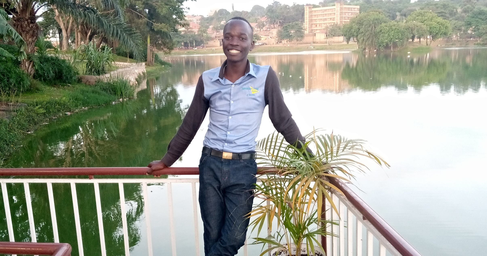
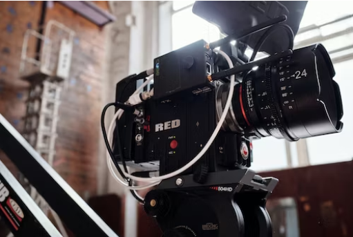

I am a skilled person at website building and
management both dynamic and static websites and
I have designed several sites under the Technolink Company.
I am a skilled person in videography who can shoot
and edit video works and I was trained by Technolink
computer center under the project of Labdoo which was funded by
ANSWERID Worldwide UG where I am employeed now.
A Web Designer / Maneger and video editor located at your proximity
I am a trusted person who has always tried to help people in this digital
era to adopt digital marketing, trading, advertising, communication among others.
To add on that information, I am also a skilled person in the filming and graphics field.
That’s to say skilled in most of the essential packages
of ADOBE i.e. Premier pro, After effect, Animator, Photoshop and Illustrator. Among others...

The art and process of capturing and producing videos, has become increasingly important in various fields and for a variety of reasons.
Here are some key importances of videography:
1. Documentation and Archiving: Videography is essential for documenting events, historical moments, and preserving memories.
It serves as a valuable tool for archiving information and experiences for future generations.
2. Real Estate and Property Promotion:Videography is commonly used in the real estate industry to showcase properties.
High-quality videos can give potential buyers a virtual tour, helping them make informed decisions.
3. Virtual Events and Conferencing: With the advent of virtual events and conferencing, videography has become crucial for capturing and live-streaming presentations, discussions, and seminars.